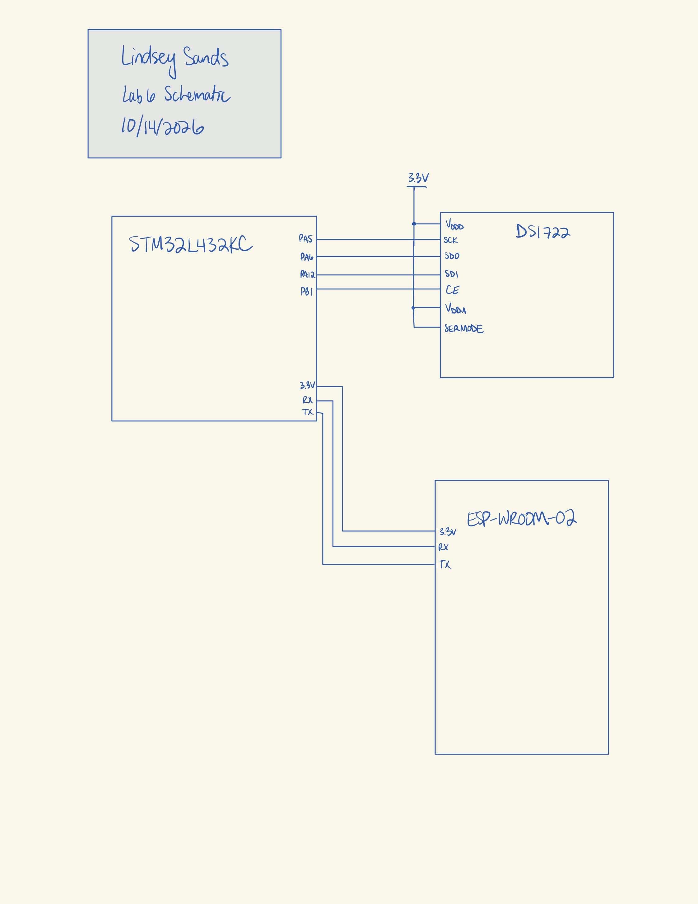
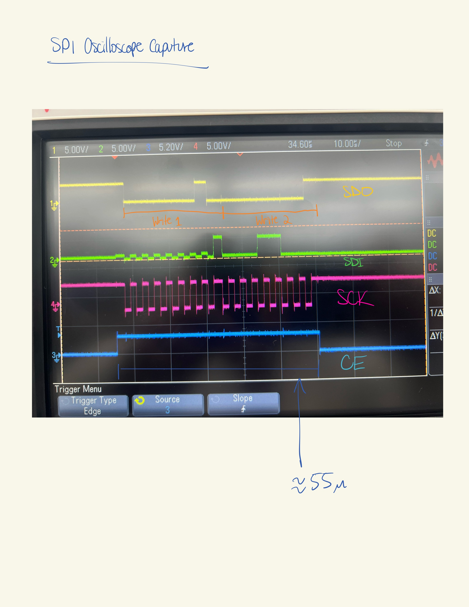

Lab 6
Introduction
In this lab, an MCU was programmed to take temperature data from a Digital Thermometer with SPI/3-Wire Interface and send that data to the web using an ESP-WROOM-02.
Technical Documentation
The source code for the project can be found in the associated Github repository.
Schematics
The connection from the MCU to the ESP-WROOM-02 and the temperature sensor is as shown below.

Results and Discussion
SPI successful sends and receives data from the temperature sensor as shown in the oscilloscope trace below.

Conclusion
The MCU successfully collects and outputs temperature data to the web! I spent about 15 hours on this lab.
AI Prototype Summary
<header>
<div class="brand">thermo<span>.</span></div>
<div class="status">● Demo mode</div>
</header>
<section class="heading">
<div class="eyebrow">Overview / Device 01</div>
<h1>Temperature monitor</h1>
<p>Monitor your sensor and control your device outputs.</p>
</section>
<section class="dashboard">
<!-- Temperature display -->
<article class="card">
<div class="card-header">
<h2>Live temperature</h2>
<span class="badge">● Sensor active</span>
</div>
<div class="temperature">
<span id="temperature">24.6</span>
<span class="unit">°C</span>
</div>
<p class="temp-status" id="tempStatus">
● Within normal range
</p>
<!-- Decorative temperature trend -->
<div class="chart">
<svg viewBox="0 0 500 110"
preserveAspectRatio="none"
aria-label="Illustrative temperature trend">
<g stroke="#f1e8e3" stroke-width="1">
<path d="M0 25 H500"/>
<path d="M0 55 H500"/>
<path d="M0 85 H500"/>
</g>
<path
d="M0 80 C40 70,60 90,100 65
S160 75,200 48 S260 60,300 38
S360 50,400 25 S460 35,500 15"
fill="none"
stroke="#ff784f"
stroke-width="3"
stroke-linecap="round"/>
</svg>
</div>
<p class="description">Illustrative recent temperature trend</p>
</article>
<div class="side">
<!-- LED control -->
<article class="card">
<div class="card-header">
<h2>LED output</h2>
<span class="eyebrow">GPIO</span>
</div>
<div class="led-preview">
<div class="bulb" id="ledBulb">💡</div>
<div class="led-text">
<strong id="ledState">LED is OFF</strong>
<span id="ledDescription">
Output is currently inactive
</span>
</div>
</div>
<div class="toggle-row">
<div>
<strong>LED power</strong>
<p>Toggle the connected output</p>
</div>
<label class="switch" aria-label="Toggle LED">
<input type="checkbox" id="ledToggle" role="switch">
<span class="slider"></span>
</label>
</div>
<hr class="divider">
<p class="description">
This switch updates the interface. Connect it to your
microcontroller API to control the physical LED.
</p>
</article>
<!-- Precision selector -->
<article class="card">
<h2>Display precision</h2>
<p class="description">
Choose how many decimal places appear in the temperature
readout.
</p>
<label for="precision" class="eyebrow">
Decimal places
</label>
<select id="precision">
<option value="0">0 decimal places</option>
<option value="1" selected>1 decimal place</option>
<option value="2">2 decimal places</option>
<option value="3">3 decimal places</option>
</select>
<div class="preview">
<span>Preview</span>
<strong id="precisionPreview">24.6 °C</strong>
</div>
</article>
</div>
</section>
<footer>
THERMO UI · Dashboard prototype · Demo readings are simulated
</footer>:::
#include “stm32l432xx.h” #include <stdint.h> #include <stdbool.h>
/ DS1722 temperature sensor MCU: STM32L432KC * Peripheral: SPI1 * CE (chip enable): PA4 IMPORTANT: DS1722 CE is ACTIVE HIGH. */
#define DS1722_SPI SPI1 #define DS1722_CE_PORT GPIOA #define DS1722_CE_PIN 4U
#define DS1722_TEMP_LSB 0x01U
#define DS1722_CE_HIGH()
(DS1722_CE_PORT->BSRR = (1U << DS1722_CE_PIN))
#define DS1722_CE_LOW()
(DS1722_CE_PORT->BSRR = (1U << (DS1722_CE_PIN + 16U)))
#define SPI_TIMEOUT 100000U
/ Transfer one byte over SPI. * Returns false if the SPI peripheral times out. / static bool SPI1_TransferByte(uint8_t tx, uint8_t rx) { uint32_t timeout = SPI_TIMEOUT;
// Wait until transmit buffer is empty. while (!(DS1722_SPI->SR & SPI_SR_TXE)) { if (–timeout == 0U) { return false; } }
// Write one byte to the SPI data register. *(__IO uint8_t *)&DS1722_SPI->DR = tx;
// Wait for one received byte. timeout = SPI_TIMEOUT;
while (!(DS1722_SPI->SR & SPI_SR_RXNE)) { if (–timeout == 0U) { return false; } }
// Read the received byte. rx = (__IO uint8_t *)&DS1722_SPI->DR;
return true; }
/ Read temperature from the DS1722. Assumptions: * - SPI1 has already been initialized. * - SPI is configured as master, 8-bit, full duplex. * - CPHA = 1, as required by the DS1722. * - SERMODE is connected to VDDD (SPI mode). * - The sensor is configured for continuous conversion. Returns true on success, false on SPI timeout. * Temperature is returned in degrees Celsius. / bool DS1722_ReadTemperature(float temperature) { uint8_t lsb; uint8_t msb; uint16_t raw;
if (temperature == 0) {
return false;
}
// Start transaction: CE must be HIGH.
DS1722_CE_HIGH();
// Send temperature LSB register address.
if (!SPI1_TransferByte(DS1722_TEMP_LSB, &lsb)) {
DS1722_CE_LOW();
return false;
}
// Read temperature LSB.
if (!SPI1_TransferByte(0xFFU, &lsb)) {
DS1722_CE_LOW();
return false;
}
// Read next register (temperature MSB).
// The DS1722 automatically advances to register 0x02.
if (!SPI1_TransferByte(0xFFU, &msb)) {
DS1722_CE_LOW();
return false;
}
// End transaction.
DS1722_CE_LOW();
// Combine MSB and LSB.
raw = ((uint16_t)msb << 8) | lsb;
// DS1722 data is signed, two's-complement,
// with temperature represented in units of 1/256 °C.
*temperature = (float)((int16_t)raw) / 256.0f;
return true;}
The HTML result looks super similar to typical vibe-coded websites. It has a temperature value even when its not hooked up to the board which is suspiscious.
The script from the second prompt didn’t do everything. Instead, it lists its assumptions in the beginning and simply creates a script for the rest. I’m not sure why it skips so many steps and assumes I have information/work that I didn’t offer up. Maybe this is a result of the increase in prompting over the years and represents an attempt to reduce costs on the AI company’s end.